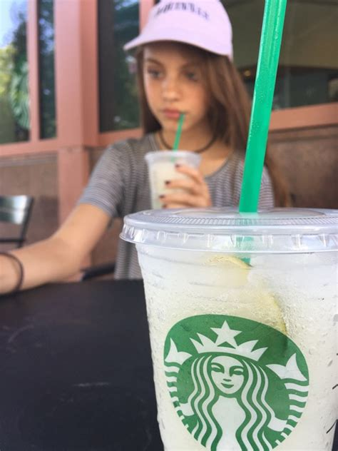

Kaffee - ein substitut für frühstück, mittag- und abendessen

they say i'm neglectic my health and i am anoxeric -- But I say: Enjoy The Coffee Life
FR eating takes time, takes time to prepare, takes time to clean up afterwards, is not as delicious as you might hope, is in one word: fr unnecessary when you have coffee
situations when i eat coffee
- right after waking up
- when i am working
- when i am meeting my friend
- before going to sleep
- when i get hungry to suppress it
- to celebrate a holiday
How To Make Coffee
- go to Starbucks
- grab one of the cheap sugared ones at the super market
- make it at home
Go back to Overview